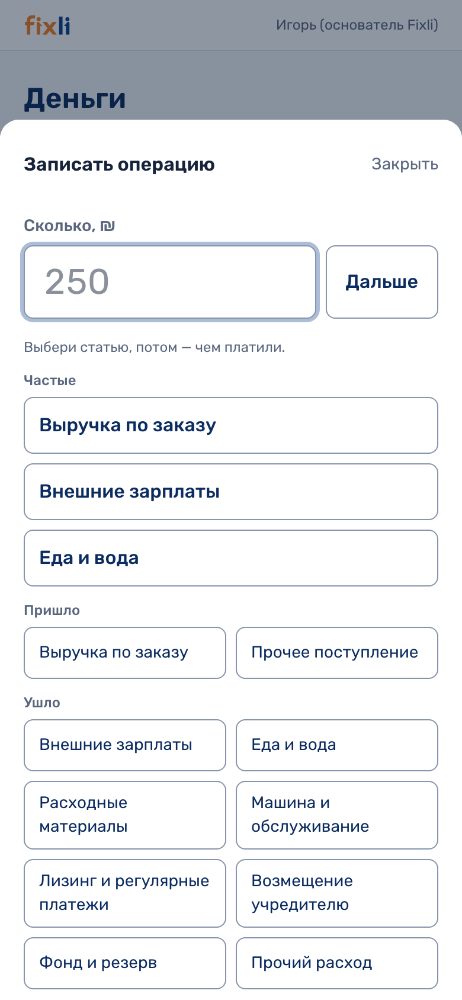
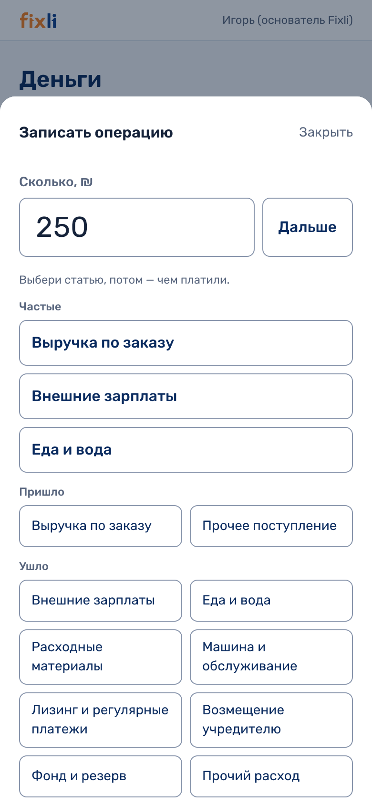
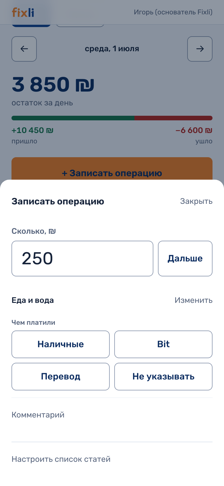
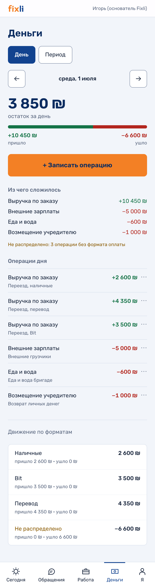
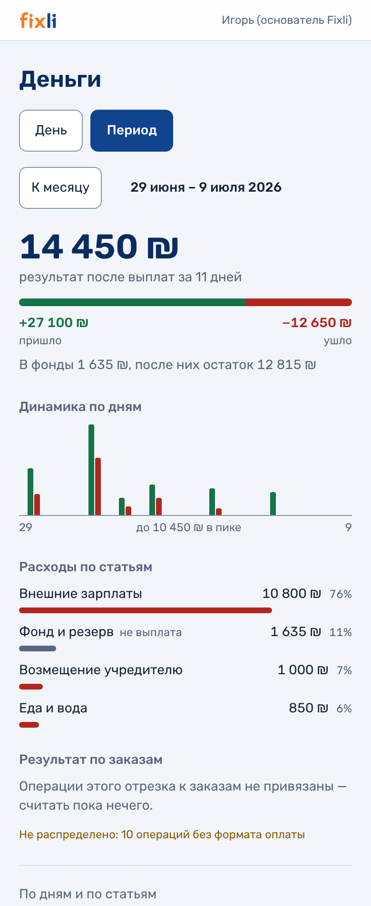
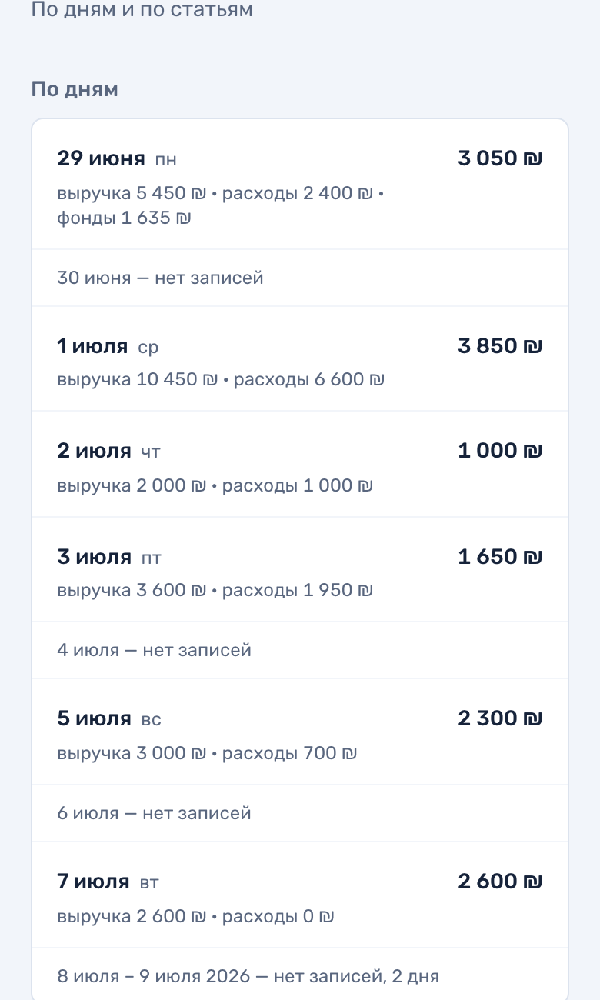

Раздел «Деньги» живёт внутри панели Fixli: экран дня, экран за период, запись операции с телефона. Словарь статей в нём не выдуман - он собран из кассовых отчётов Димы и из категорий, которые Игорь назвал голосом на встрече 22 августа.
Почему кадры, а не доступ. Касса сейчас пустая - наши тестовые записи мы из неё убрали. Вход показал бы тебе пустой экран вместо продукта, поэтому ниже настоящие кадры работающих экранов, снятые на июльской кассе Димы: числа на них его, живые.
Что нужно от тебя. Правки своими словами: что переименовать, чего не хватает, что здесь лишнее. Внизу семь вопросов, под каждым поле; написанное сохраняется само, так что можно ответить в два захода.
Как это работает
Раздел открывается с телефона и с компьютера. Деньги видят только владельцы: ни диспетчер, ни бригадир не получают ни строки - это не спрятанная кнопка, им просто не отдаются данные.
Записать операцию - один ввод и три касания
Ни даты, ни выпадающих списков: день берётся из открытого экрана, а расход это или поступление - из самой статьи.

Шаг 1. Сумма. Поле открывается с курсором внутри и цифровой клавиатурой. Подтверждаешь кнопкой «Дальше» или Enter. Экран сам не уезжает по первой цифре намеренно: «2» из «2500» - уже цифра, и раньше он уходил посреди набора.

Шаг 2. Статья. Сверху три частые - они считаются по твоим же операциям за последние два месяца, а порядок внутри не прыгает. Ниже остальные, и ни одна не спрятана за «Ещё». Кнопка статьи - это и есть выбор направления: восемь статей из девяти бывают только в одну сторону, поэтому набрать «расход» и «выручку по заказу» вместе физически нельзя.

Шаг 3. Чем платили. Наличные · Bit · Перевод · Не указывать - любая из четырёх записывает операцию. «Не указывать» здесь законный ответ, а не пропуск, почему - ниже в решениях.
День

Порядок сверху вниз - порядок решений: сколько осталось → записать → из чего сложилось → что именно записано. Всё до ленты операций помещается в один экран телефона. Нажатие на строку раскрывает подробности, «Изменить» и «Убрать». Дни листаются стрелками, вперёд дальше сегодняшнего не пускает.
Период

Тот же материал вторым разрезом. По умолчанию календарный месяц - им закрываются лизинг, регулярные платежи и зарплаты; свой отрезок задаётся датами. Сверху результат отрезка, под ним второе число - остаток после отложенных фондов.

Дни идут строками, а не таблицей: у таблицы в восемь колонок на телефоне обрезается последний столбец, то есть ровно то число, ради которого её открыли. Дни без записей схлопываются в одну тихую строку, чтобы живые было видно. Строка дня ведёт в кассу этого дня.
Девять статей и откуда взялась каждая
Порядок такой же, как в отчётах Димы: сначала поступления, дальше расходы, «прочее» последним. Это тот самый список, который стоит в базе, - не пересказ.
- Выручка по заказу - деньги за выполненную работу, единственная статья поступлений. Из блока «Поступления» в кассовых PDF Димы.
- Внешние зарплаты - то, что заплатили нанятым людям. Игорь голосом: «зарплаты сотрудников». Слово «внешние» - из блоков Димы: зарплата учредителей в кассе не считается вовсе, об этом отдельно ниже.
- Еда и вода - бригаде на смене. Игорь голосом, дословно «еда/вода».
- Расходные материалы - плёнка, картон, скотч, одеяла. Игорь голосом.
- Машина и обслуживание - топливо, ремонт, мойка, всё по транспорту. Игорь голосом.
- Лизинг и регулярные платежи - то, что уходит каждый месяц, а не по случаю. Игорь голосом: «разовые и ежемесячные глобальные, лизинги».
- Возмещение учредителю - возврат личных денег, вложенных раньше. Не зарплата и не выручка, поэтому отдельная строка. Статья из кассовых блоков Димы, его формулировка.
- Фонд и резерв - 30 % на инвестора, налоги и развитие. Стоит в расходах, но деньги из кассы при этом не уходят. Из сводной кассы Димы, его слова: «управленческое распределение, не фактическая кассовая выплата».
- Прочее - единственная статья, которая бывает и приходом, и расходом. Наше решение. Без неё человек ткнёт в ближайшую похожую статью, и отчёт начнёт врать вместо того, чтобы честно показать неразобранное.
У «Прочего» можно написать своё название платежа - «Реклама», «Штраф», что угодно до сорока знаков. Название встаёт вместо слова «Прочее», а не рядом с ним, и внутри графы видно, из чего она сложилась. Часто повторяющееся название закрепляется кнопкой и дальше стоит в списке своей строкой.
Пять решений, которые стоит оспорить
Это не мелочи оформления, а то, из-за чего числа складываются так, а не иначе. Каждое принято по отчётам Димы. Если для тебя правильнее по-другому - скажи в последнем вопросе.
1. Остатка два, а не один
Первый - после фактических выплат, «сколько денег в руках». Второй - после фондов, то есть минус отложенные 30 %. У Димы в сводке они стоят двумя числами, и смешать их значит показать человеку меньше денег, чем у него на руках, - ровно в тот вечер, когда он решает, платить ли сегодня зарплату. Если фондов за период не было, второе число не печатается: две одинаковые цифры подряд читаются как ошибка счёта.
2. «Не распределено» - законное состояние, а не ошибка
В сводке Димы часть записей идёт без способа оплаты, и он сам пишет «формат оплаты не указан», а не «данные потеряны». Поэтому это значение по умолчанию: незакрытый вопрос, который видно одной строкой в движении по форматам. Отдельного «формат не выбран» рядом с ним нет - это были бы два слова про одно и то же.
3. Зарплаты учредителей в кассе нет вовсе
В обоих кассовых блоках Димы стоит прямым текстом: «зарплата учредителей в этом блоке не считается». Поэтому статья и называется «Внешние зарплаты» - записать зарплату себе физически некуда, и не потому, что мы запретили, а потому, что такой графы в самой кассе нет. Если учёт теперь должен её видеть - это как раз то изменение, которое надо назвать.
4. Операция не удаляется, а убирается
Убранная строка уходит с экрана, но остаётся в базе вместе с тем, кто и когда её убрал; внизу дня стоит счётчик «убрали столько-то операций». Настоящее удаление унесло бы вместе со строкой и запись о том, кто это сделал, - деньги исчезали бы анонимно. Сумму, статью, способ оплаты, комментарий и своё название можно поправить на месте, кнопка «Изменить» стоит рядом с «Убрать».
5. День у операции не правится
Поля даты в форме нет вовсе: день берётся из того экрана, который открыт. Второе место, где задаётся день, означало бы второй ответ на вопрос, в какую кассу это попало. И перенести записанную операцию в другой день нельзя: это перенос денег между двумя кассами и два изменившихся итога - отдельное решение, а не правка поля. Ошибся днём - убираешь и записываешь на нужном дне.
Чего в кассе нет
Честный список, чтобы ты не искал того, чего там не лежит.
- Разреза по услугам. «Переезды столько-то, сборка столько-то, хендимен столько-то» - построить не из чего: у заказа в базе нет поля услуги вовсе. Есть номер, клиент, статус, суммы, адреса и заметки. Вид работы живёт только у обращения, и то не у каждого заказа оно есть. Это отдельная работа в другой части системы, и начинается она не с экрана денег - вопрос про неё ниже.
- Автоматической выручки из закрытых заказов. Задумано так: закрытый заказ предлагает поступление своей суммой, а человек подтверждает - фактическая сумма отличается от плановой чаще, чем совпадает. Написано это ещё не было, каждая строка вводится руками.
- Голосового ввода. Игорь просил сказать боту «потратил на воду и бутерброды», и чтобы трата легла в статью. Расшифровка голосовых в системе уже работает - она расшифровывает общий чат, - а разбора речи в операцию нет.
- Любой бухгалтерии. Ни НДС-разрезов, ни счетов-фактур, ни двойной записи. Это управленческая касса, она отвечает на вопрос «сколько мы заработали за день», а не готовит отчётность. Отдельно: налоговый счёт חשבונית מס мы не вправе выпускать вовсе - с 2024 года он получает номер распределения в налоговом управлении и выходит только из сертифицированного софта.
- Долгов, авансов и предоплат. Операция - это деньги, которые уже пришли или ушли в конкретный день. «Клиент должен», «взяли предоплату за следующий месяц», «заплатим поставщику потом» записать нечем.
- Нескольких касс. Наличные, Bit и перевод - это признак у операции, а не отдельные кошельки-сущности: остаток по каждому виден строкой в общем движении. «Касса Игоря» и «касса Андрея» отдельно не заводятся.
- Выгрузки в файл. И это решение, а не забытая кнопка: первый выгруженный отчёт становится второй правдой о деньгах, живущей вне системы. Если учёт всё равно ведётся в таблице, то разговор скорее про импорт, чем про экспорт, - об этом третий вопрос.
Семь вопросов
Каждый из них что-то меняет в продукте - анкеты здесь нет. Коротко, можно списком; «не знаю» и «неважно» - тоже ответы, они снимают вопрос с очереди.
Отвечать можно прямо здесь: напиши в поле под вопросом, внизу кнопка соберёт написанное в одно сообщение для чата.
1. Девять статей - чего не хватает и что называется иначе?
Вопрос не «расскажи, как ты считаешь», а вычеркни лишнее и переименуй своими словами. Список выше, менять его можно целиком.
Он висит с 25 августа в окне Димы и остался без ответа. Это не новый вопрос - сменился адресат: отвечает тот, кто будет вести учёт.
2. Взнос учредителя - куда его писать?
Сейчас записать его некуда. «Возмещение учредителю» - это возврат ранее внесённых личных денег, то есть расход; самого внесения нет ни в одном кассовом блоке Димы, и выдумывать под него графу мы не стали: в кассе, где графа появилась сама, через месяц никто не помнит, что она значит. Пока такое ложится в «Прочее» со своим названием.
Ответ «так и оставить» - нормальный ответ. Этот вопрос тоже с 25 августа.
3. В чём ты ведёшь учёт сейчас? Если есть таблица - покажи её.
Скрин или файл, как удобнее. Спрашиваю не из вежливости: колонки твоей таблицы - это готовое задание, и переизобретать словарь поверх него незачем. Если учёта пока нет вовсе - так и напиши, это тоже ответ.
4. Какие одно-два числа ты хочешь видеть, открыв экран?
Сейчас первым стоит остаток дня, вторым - остаток после фондов. Это числа Димы, из его сводки. Если тебе первым нужно другое - выручка за месяц, расход за неделю, сколько наличных на руках - назови число и отрезок, за который оно считается.
5. Кто вносит операции - только ты, или Игорь с телефона на объекте тоже?
От этого зависит форма. Один человек вечером за компьютером и двое, вбивающих траты на ходу, - это разные экраны: во втором случае важнее скорость записи и то, чтобы двое не путались в чужих строках, а не удобство разбора в конце дня.
6. Нужен ли разрез по услугам - и кто будет проставлять вид работы у заказа?
Вторая половина вопроса и есть настоящая. Сам разрез считается легко, но данных для него нет: вид работы должен стоять у каждого заказа, и ставить его будет человек - на каждом заказе, каждый день. Если этого никто делать не станет, разрез будет врать красиво.
7. Что здесь лишнее или мешает?
Отдельный вопрос, потому что убрать обычно важнее, чем добавить. Любая статья, кнопка, число или целый экран, без которых ты обойдёшься, - назови их.